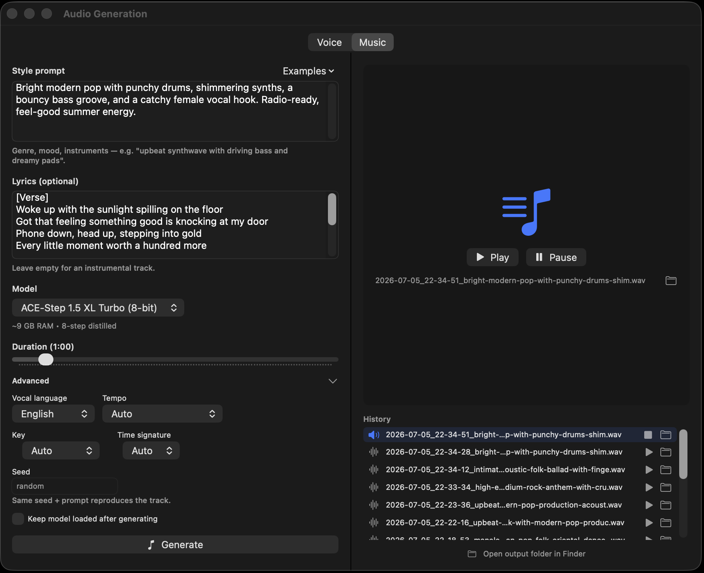

"Upbeat synthwave with driving bass" — and ACE-Step 1.5 XL Turbo composes an original 48 kHz stereo track in 8 diffusion steps, entirely on your Mac. Paste lyrics and it sings them; leave them out for an instrumental. No cloud, no subscription, no usage caps.
Open the Audio pane's Music tab, describe the style — genre, mood, instrumentation — and generate. Want vocals? Paste lyrics (verse/chorus tags steer the arrangement) and pick the vocal language. Want control? Pin the BPM, key, and time signature; leave them free and the model chooses.
Style-prompt starters and original lyric templates ship in the Examples menus, and you can save your own to reuse. Every track lands in a persistent history — play, stop, reveal in Finder — with a settings file beside it recording the exact prompt, lyrics, and parameters, so any take is reproducible.

ACE-Step 1.5 XL Turbo runs on the same no-Python engine as everything else here: a text encoder conditions a 32-layer diffusion transformer, an audio VAE decodes to waveform, and the turbo schedule needs just 8 steps end to end. The port is validated against the reference implementation with per-component numerical oracles.
One click downloads the converted model (~6.3 GB); it generates comfortably in about 9 GB of memory, loads on demand, and frees itself afterwards — chat and music coexist in one server process.
POST /v1/audio/music-generations with a prompt, optional lyrics, duration, and musical steering — get a 48 kHz stereo WAV back, with per-step SSE progress. Full API docs.
Feed a generated track into audio-to-video and the visuals perform to your soundtrack — beat, mood, and all.
The Audio pane's Voice tab does zero-shot voice cloning — six seconds of audio, no transcript, bit-for-bit validated.
A .txt sidecar beside each track records the model, prompt, lyrics, and parameters — recreate or iterate on any result later.
An Apple Silicon Mac with 16 GB works well — the 8-bit model generates in about 9 GB of memory and is a ~6.3 GB one-click download.
Yes. Paste lyrics and the vocal performance follows them — structure tags like verse and chorus steer the arrangement, and the vocal language is selectable. Empty lyrics produce an instrumental.
Style, mood, and instrumentation come from the prompt; BPM (30–300), key/scale, and time signature can be pinned exactly or left to the model. Track length runs from 10 seconds to 10 minutes, and a seed makes any generation repeatable.
It's generated on your machine from your prompt — there's no service holding rights over your renders. ACE-Step is an open-weights model; check its license for the fine print on commercial use of outputs.
Download MLX Core, grab the music model with one click, and render as many takes as you like.